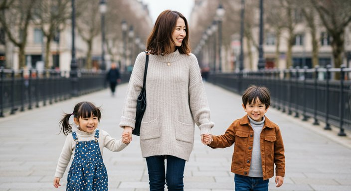
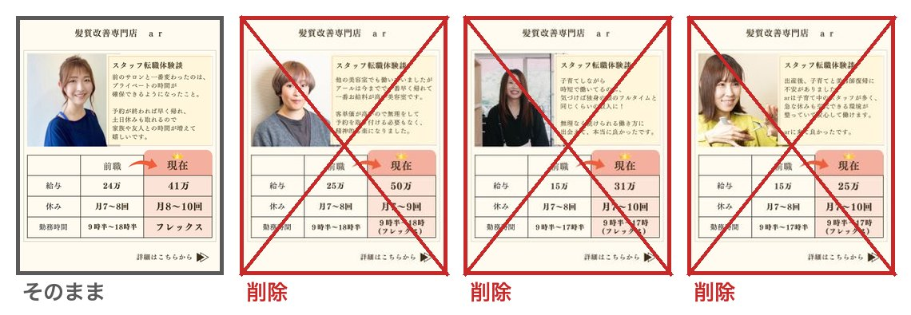
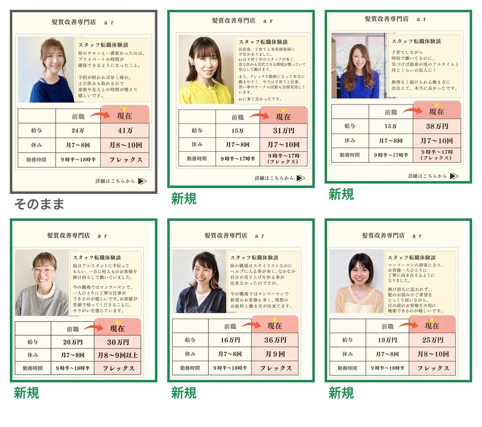
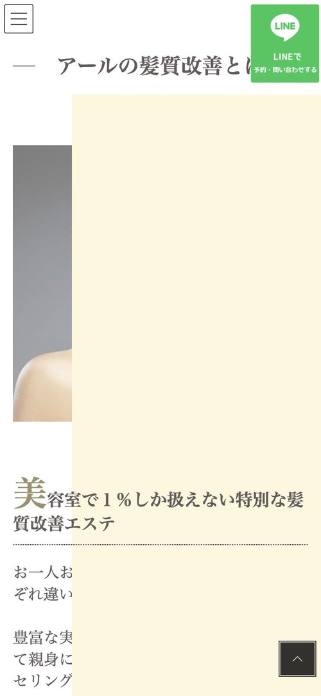
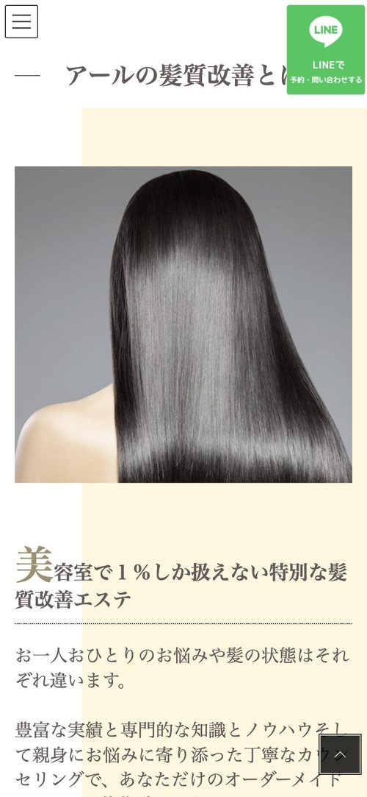
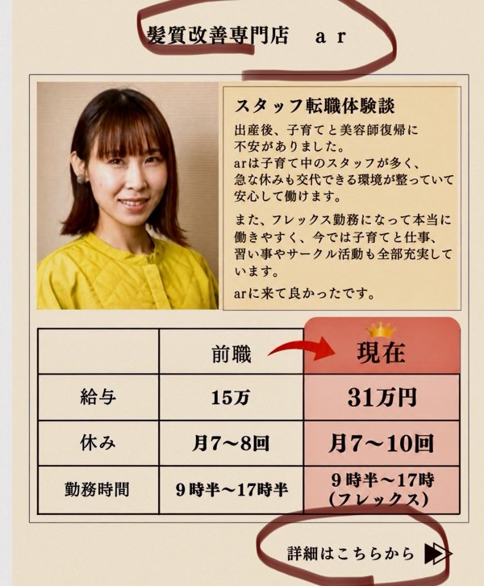
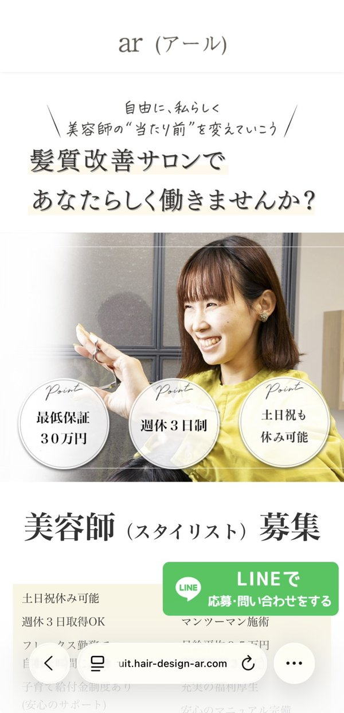
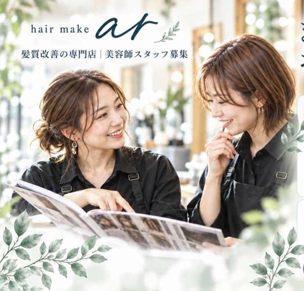

いつもお世話になっております。
LINEでいただいた修正について、反映した後の見た目をご用意しました。
各項目の「今」と「反映後」を見比べていただき、ページ下部のフォームから結果をお知らせください。
このシートの内容は、まだ本番のホームページには反映していません。OKをいただいてから反映いたします。
反映を予定している修正（5件）美容師求人LP
1
①マンツーマン施術… の写真
反映前のご確認
該当箇所：アールが安心して働ける5つの理由 ＞ ①
2
②土日祝休みや連休も相談可能で… の写真
反映前のご確認

3
④ブランクがあっても安心のサポート体制… の写真
反映前のご確認
該当箇所：アールが安心して働ける5つの理由 ＞ ④
4
⑤家庭優先OK… の写真
反映前のご確認
該当箇所：アールが安心して働ける5つの理由 ＞ ⑤
反映後

左の写真を右に変更お願いします とのご指示どおり、今②で使っている「親子3人が歩く写真」を⑤に移します（②には2番のカフェの写真が入ります）。
5
転職事例の入れ替え
反映前のご確認
該当箇所：03 転職事例
今（4枚）

反映後（6枚・3枚ずつ2段）

次のとおり整理しました。違っていればフォームでお知らせください。
・今の1枚目（24万→41万の方）：そのまま残します
・今の3枚目・4枚目：こちらの2枚は削除してください（10/18）のご指示で削除
・今の2枚目（25万→50万の方）：一旦この方の写真は消してください（10/17）のご指示で削除
・新しい5枚：10/17にいただいた5枚を追加
・今の1枚目（24万→41万の方）：そのまま残します
・今の3枚目・4枚目：こちらの2枚は削除してください（10/18）のご指示で削除
・今の2枚目（25万→50万の方）：一旦この方の写真は消してください（10/17）のご指示で削除
・新しい5枚：10/17にいただいた5枚を追加
表示崩れの修正（1件）髪質改善サイト
6
「アールの髪質改善とは」の下が見えない件
反映前のご確認
該当箇所：kaizen.hair-design-ar.com ＞ アールの髪質改善とは（スマホ表示）
原因：この部分には飾りとして、クリーム色の四角い背景が付いています。スマホではその背景が写真や文章の上に重なってしまい、内容を隠していました。
対応：背景を写真や文章の後ろ側に回します。文章や写真そのものは変わりません。
今（スマホ）

反映後（スマホ）

※ 画像をタップすると大きく表示されます
ご確認・お願いしたいこと（3件）
A
スタッフの声の写真について
ご確認ください
10/17に この方の写真を↓にお願いします、この方はコメント、写真このままで加えてください とご連絡いただいた件です。
- ①の方の写真を、②の笑顔の方の写真に替える、という理解でよろしいでしょうか。
- ③の方は、画面のとおりの文章と写真で「スタッフの声」に1人追加します。
- ②・③の写真は画面から切り抜くと粗くなるため、元の写真データをお送りいただけますと助かります。
B
転職事例のカードの「丸枠」について
ご確認ください

丸枠は消してもらってOKです とのことでしたが、
カードの上の「髪質改善専門店 ar」と、下の「詳細はこちらから」を、転職事例のカードすべてから消す、という意味でよろしいでしょうか。
今回の反映後の見た目（5番）では、まだ消していません。
カードの上の「髪質改善専門店 ar」と、下の「詳細はこちらから」を、転職事例のカードすべてから消す、という意味でよろしいでしょうか。
今回の反映後の見た目（5番）では、まだ消していません。
C
トップ画像の差し替えについて
お願い


LINEで届いた画像は縮小されていて、そのままトップに使うと画質が粗くなってしまいます。
お手数ですが、LINEで画像を送る際に「オリジナル画質」を選んで、もう一度お送りいただけますでしょうか。
あわせて、スマホ・パソコンの両方をこの画像に替えてよいかもお知らせください。
お手数ですが、LINEで画像を送る際に「オリジナル画質」を選んで、もう一度お送りいただけますでしょうか。
あわせて、スマホ・パソコンの両方をこの画像に替えてよいかもお知らせください。
ご確認結果のご連絡
直接のご連絡
LINEでのご連絡も引き続き承っております。
メール：yudai0714@ydk-ai.com ／ 担当：株式会社YDK 北田